Kinematic abstraction
The compliant finger was represented as a tractable sliding–rocker mechanism to predict its trajectory.
Research project · MiMed, TUM
Structure-driven compliant mechanism design, FDM fabrication, modeling, optimization, and experimental validation
A hands-on mechanism development project spanning concept generation, CAD design, one-shot fabrication, kinematic and force analysis, robot integration, and physical grasping tests.
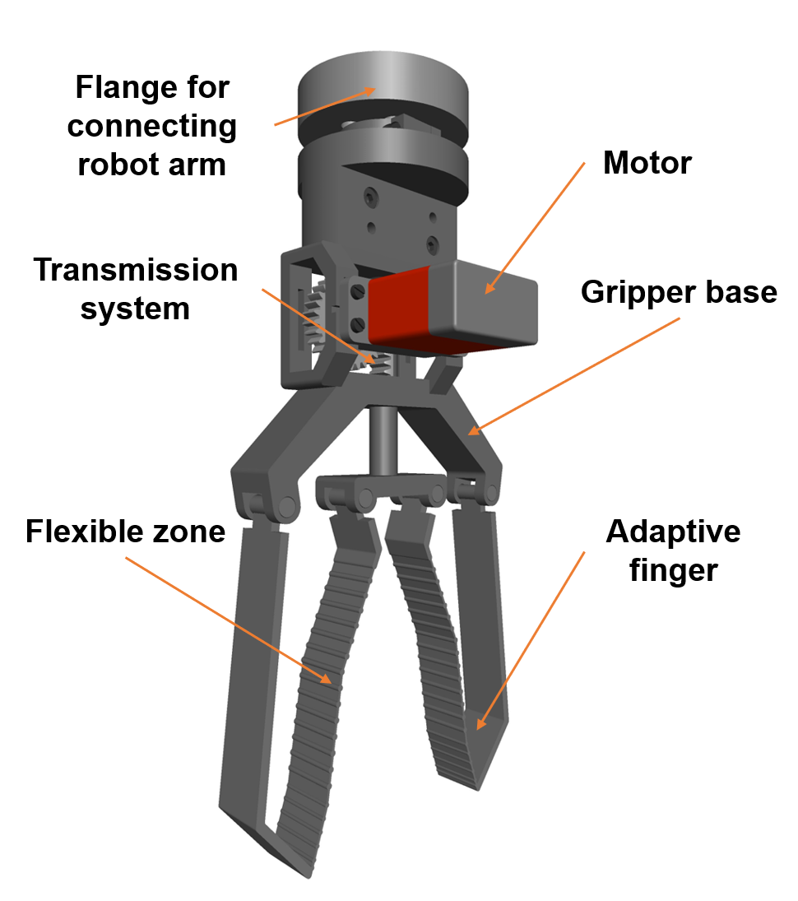
01 / Engineering Challenge
The design objective was to develop a robotic gripper that combines the load-bearing capability of rigid structures with passive adaptability to different object geometries—without making fabrication complex or expensive.
Conventional rigid fingers can carry load efficiently but require accurate positioning and object-specific control. Fully soft fingers adapt naturally, but may compromise stiffness and payload. The engineering question was therefore structural: could a single printable geometry provide both behaviors?
Carry useful loads
Maintain a stiff external load path.
Adapt passively
Conform to varied object geometry.
Manufacture simply
Use accessible one-shot FDM fabrication.
02 / Design Exploration
Multiple structural concepts were evaluated through repeated CAD modeling, motion assessment, physical prototyping, and testing. Each iteration refined the balance between constraint, adaptability, simplicity, and printability.
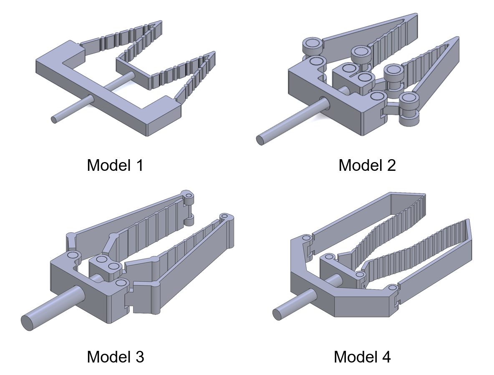
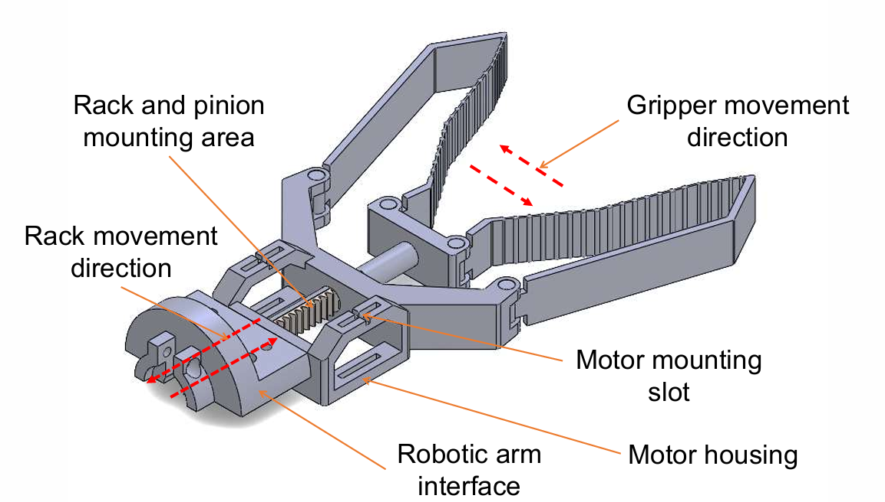
03 / Final Rigid–Flexible Architecture
The finger is printed entirely from a single material, PLA. Its behavior comes from deliberate structural differentiation within the geometry.
04 / Engineering Analysis
A simplified sliding–rocker kinematic model described finger motion, while virtual-work-based force transmission analysis connected actuator input to grasping behavior.
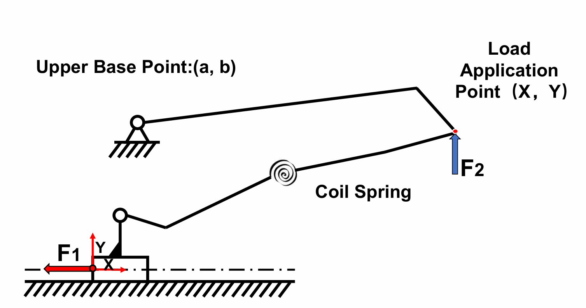
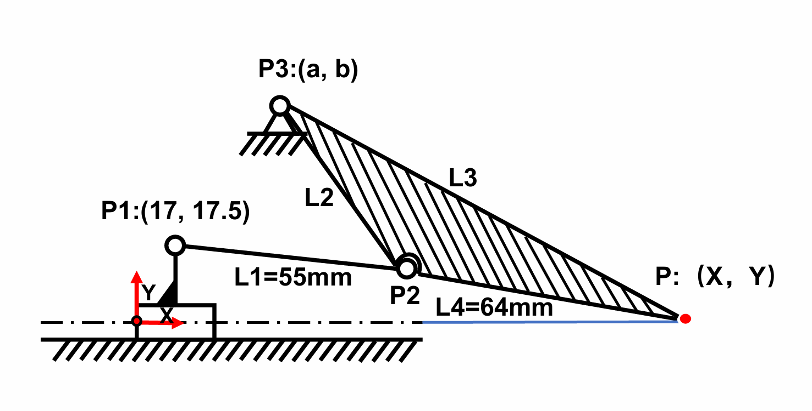
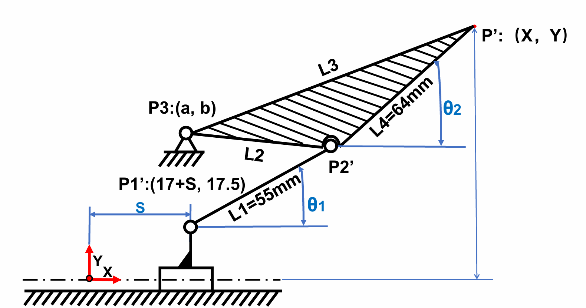
The compliant finger was represented as a tractable sliding–rocker mechanism to predict its trajectory.
A virtual-work approach was used to evaluate how geometry affects actuation efficiency.
Optimization balanced force-transmission performance with useful vertical extension.
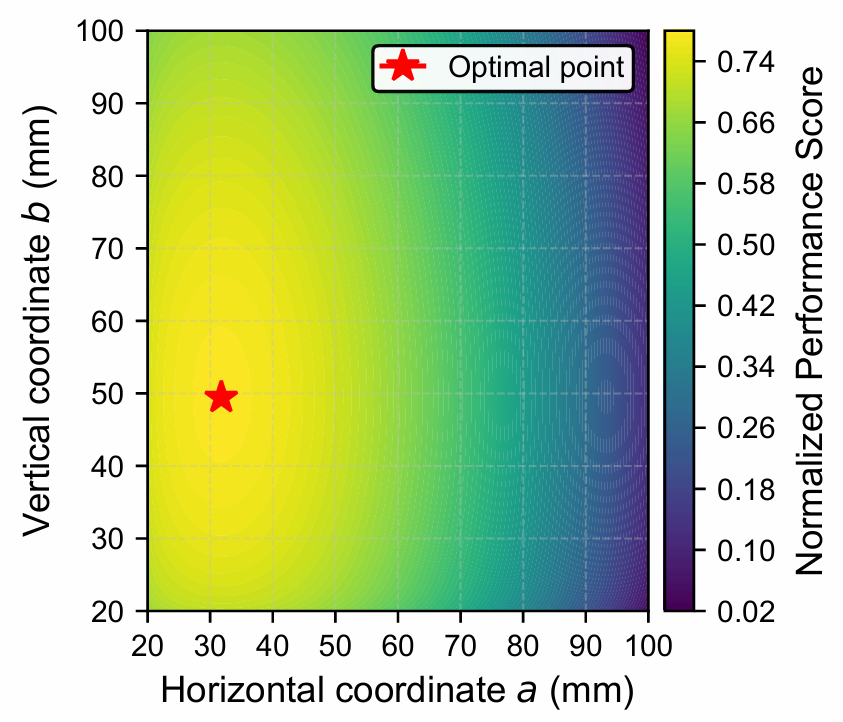
05 / Design for Additive Manufacturing
The adaptive finger was engineered as a monolithic, one-shot FDM part in PLA. Dimensions were selected to create repeatable flexure while retaining a robust external frame and accounting for practical printer tolerances.
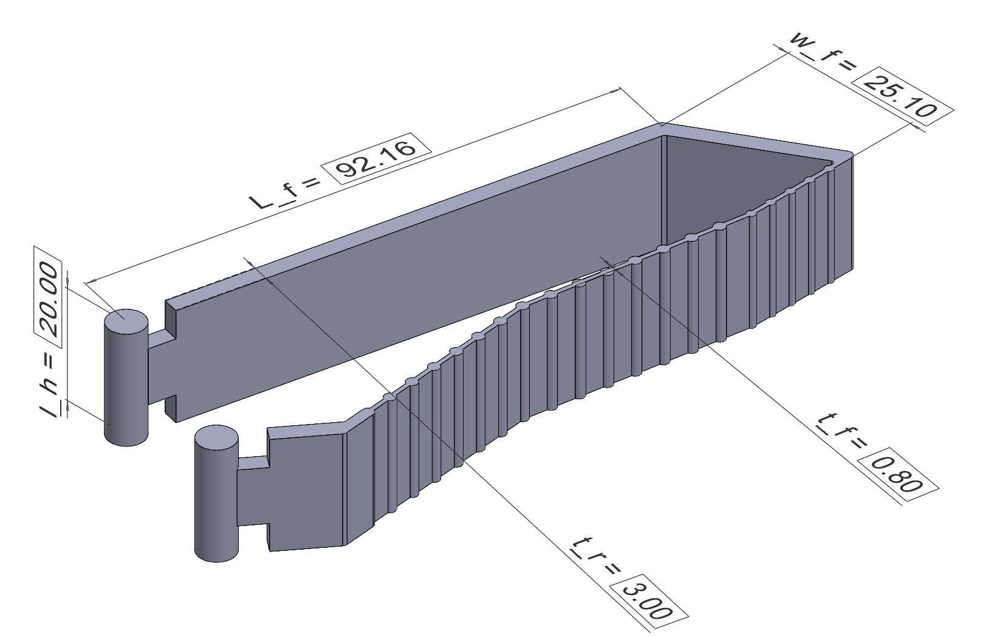
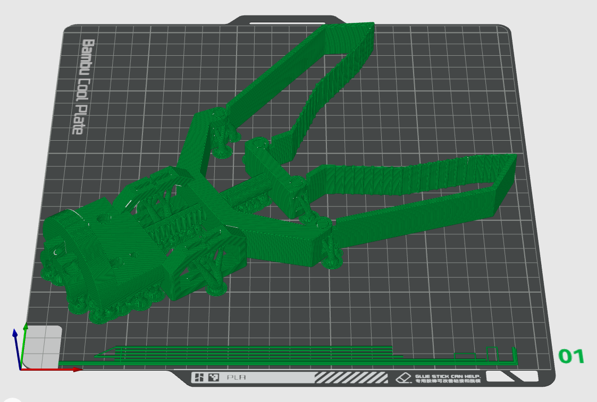
06 / Robot Integration & Experimental Validation
The completed prototype was mounted to a robotic arm and evaluated through trajectory measurements, tensile-load tests, and grasping trials across a broad range of objects.
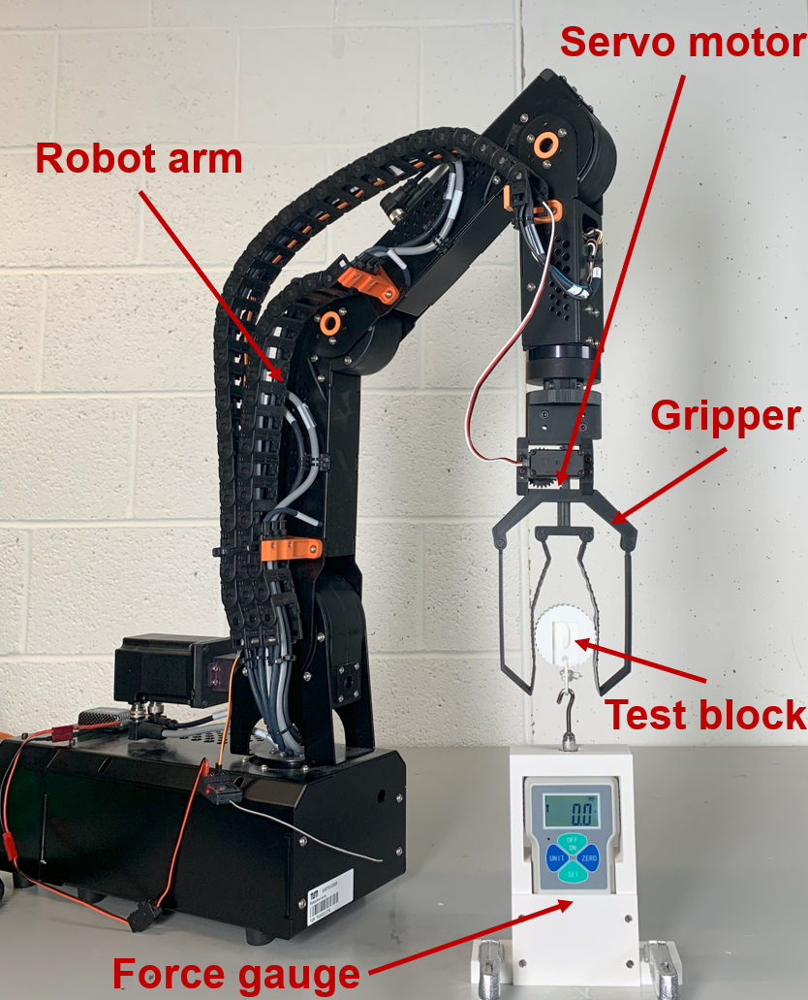
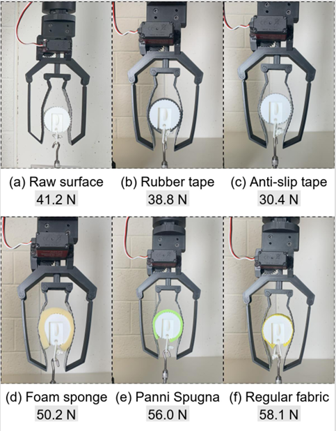
Baseline payload with bare PLA contact
Maximum tensile load with textile-covered contact
Stroke ratio
Mean trajectory prediction error
Successfully grasped object characteristic size range
07 / Real-World Grasping
Representative trials covered different dimensions, surface properties, stiffnesses, and geometries—from small cylindrical parts to fruit, bottles, tools, and wide containers.
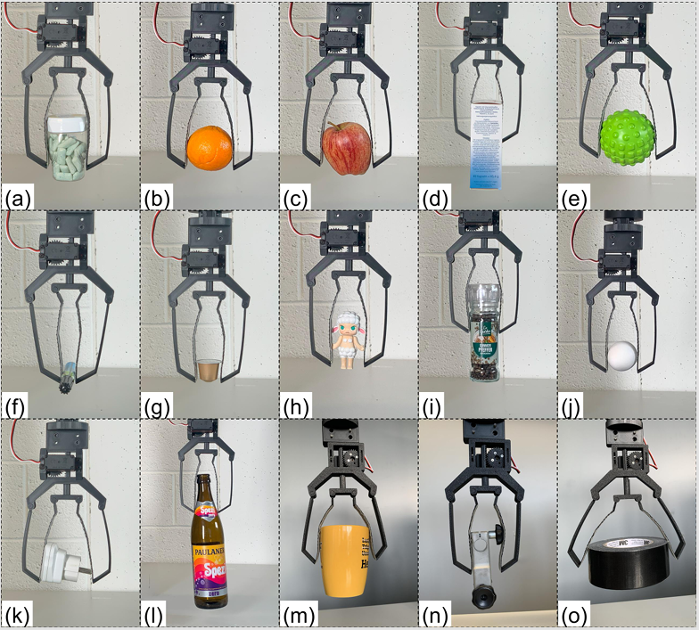
08 / Publication
Peer-reviewed journal article